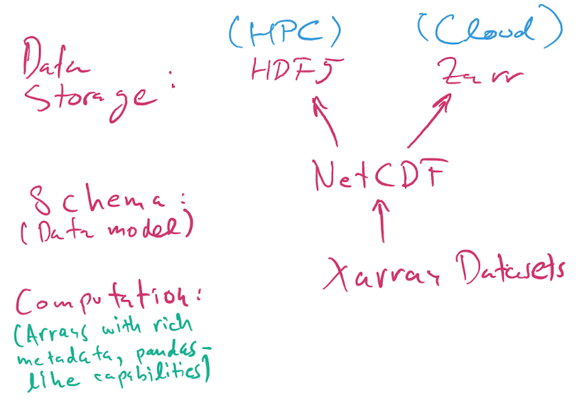

Data Serialization#
Some far, most of the datasets we usually manipulate tabular data, sometimes stored in a .csv (comma separate values) file. Here, we are going to expand this notion to other examples of serialization of data. Serialization refers to the action of organizing data in a sequence, one after each other. This involves grabbing a type of data structure (arrays, tables, hierarchical data format) into a bit serial format that we can write and read. At the end of a day, we need to be able to store complex datasets as a series of bits, and that is what serialization is about.
There are different types of dataformats and protocols under which they are serialized and store in memory. During this lecture we are going to cover:
Pickle and Shelve
Numpy: npy, npz
JSON
Dataframes: CSV and Feather
HDF5, NetCDF, and Xarray
1. Pickle and Shelve#
In Python, there are some native serialization methods, including Pickle and Shelve. The following Python types can be pickled:
None,True, andFalseIntegers, floating-point numbers, complex numbers
Strings, bytes, bytearrays
Tuples, lists, sets, and dictionaries containing only picklable objects
For our purposes, the list stops here. In reality, the following can also be pickled, but I do not recommend doing so for now. There are scenarios where pickling these things makes sense, but they are more advanced and we will not discuss them for now:
functions (built-in and user-defined) defined at the top level of a module (using def, not lambda)
classes defined at the top level of a module
instances of such classes whose
__dict__or the result of calling__getstate__()is picklable
Warning
The pickle module is not secure. Only unpickle data you trust.
It is possible to construct malicious pickle data which will execute arbitrary code during unpickling. Never unpickle data that could have come from an untrusted source, or that could have been tampered with. Safer serialization formats such as JSON may be more appropriate if you are processing untrusted data.
Let’s see an example of how pickle works. Here we are going to see how pickle.dumps() represents the Python object in bytes.
import pickle
pickle.dumps(1)
b'\x80\x04K\x01.'
Now, with a list
pickle.dumps([1])
b'\x80\x04\x95\x06\x00\x00\x00\x00\x00\x00\x00]\x94K\x01a.'
As we mentioned before, pickle can be use to both store and read the data. Let’s see an example of how to recover the data.
a = [1, 1.5, "hello", {3, 4}, {'int': 9, 'real': 9.0, 'complex': 9j}]
with open('data.pkl', 'wb') as f:
pickle.dump(a, f)
with open('data.pkl', 'rb') as f:
b = pickle.load(f)
b
[1, 1.5, 'hello', {3, 4}, {'int': 9, 'real': 9.0, 'complex': 9j}]
The shelve module provides a disk-stored object that behaves (mostly) like a dict, whose keys are strings and whose values are anything that can be pickled:
import shelve
with shelve.open('spam') as db:
db['eggs'] = 'eggs'
db['numbers'] = [1,2, 3, 9.99, 1j]
%ls -l spam.*
-rw-r--r-- 1 jovyan jovyan 37 Mar 13 20:16 spam.bak
-rw-r--r-- 1 jovyan jovyan 588 Mar 13 20:16 spam.dat
-rw-r--r-- 1 jovyan jovyan 37 Mar 13 20:16 spam.dir
Note
Do not rely on the shelf being closed automatically; always call close() explicitly when you don’t need it any more, or use shelve.open() as a context manager, as shown above.
with shelve.open('spam') as db:
e = db['eggs']
n = db['numbers']
print(f'{e = }')
print(f'{n = }')
e = 'eggs'
n = [1, 2, 3, 9.99, 1j]
Warning
Notice that Pickle is a tool for managing data just between Python processes!
2. Numpy: npy, npz#
How to save and load NumPy objects provides more details, and all input/output APIs in numpy are described here.
As a minimum starter, you should know that:
Numpy has a native, simple, efficient, binary storage format for single arrays as
.npyfiles. These are portable across machines and versions of Numpy.Multiple arrays can be stored in a dict-like form in a single
.npzfile.
The relationship between npy and npz files is somewhat similar to that between single pickles and shelve objects in Python.
import numpy as np
a = np.array([1, 2, 3.4])
fname = 'arr.npy'
np.save(fname, a)
b = np.load(fname)
(a == b).all()
True
Multiple arrays (or scalar data) can be saved in a shelve-like object with the np.savez() function, that writes .npz files:
fname = 'arrays.npz'
np.savez(fname, a=a, b=np.random.normal(10), c=3.4)
arrays = np.load(fname)
arrays.files
['a', 'b', 'c']
arrays['a']
array([1. , 2. , 3.4])
arrays['c']
array(3.4)
3. JSON#
JavaScript Object Notation (JSON) is a human-readable format that similar to a Python dict that can represent native JavaScript types. In some cases it can be an alternative to Pickle, with the advantage of being natively portable to the Web and the JavaScript ecosystem. From the Python pickle docs, this quick comparison is useful for our purposes:
JSON is a text serialization format (it outputs unicode text, although most of the time it is then encoded to utf-8), while pickle is a binary serialization format
JSON is human-readable, while pickle is not
JSON is interoperable and widely used outside of the Python ecosystem, while pickle is Python-specific
JSON, by default, can only represent a subset of the Python built-in types, and no custom classes; pickle can represent an extremely large number of Python types (many of them automatically, by clever usage of Python’s introspection facilities; complex cases can be tackled by implementing specific object APIs)
Unlike pickle, deserializing untrusted JSON does not in itself create an arbitrary code execution vulnerability
JSON examples with the Python json module. JSON in IPython JSON schemas - geojson
Note
Jupyter notebooks are JSON files on-disk. This means that the content of the Jupyter notebook, the schema, is stored as a JSON file.
Let’s see an example of how to store in disc nested Python object like this.
import json
a = ['foo', {'bar': ['baz', None, 1.0, 2]}]
json.dumps(a)
'["foo", {"bar": ["baz", null, 1.0, 2]}]'
with open('test.json', 'w') as f:
json.dump(a, f)
with open('test.json', 'r') as f:
b = json.load(f)
b
['foo', {'bar': ['baz', None, 1.0, 2]}]
We can test that the original Python object and the one we read from disk are exactly the same:
a == b
True
But be careful:
c = ['foo', {'bar': ('baz', None, 1.0, 2)}]
with open('test2.json', 'w') as f:
json.dump(c, f)
with open('test2.json', 'r') as f:
d = json.load(f)
c == d
False
from IPython.display import display, JSON
display(JSON(c))
<IPython.core.display.JSON object>
JSON format also allows us to encode different types of data objects. For examples, using GeoJSON we can represent geolocated data:
classroom = {
"type": "Feature",
"geometry": {
"type": "Point",
"coordinates": [-122.260630, 37.872526]
},
"properties": {
"name": "Stat 159 2023 Classroom"
}
}
display(JSON(classroom))
<IPython.core.display.JSON object>
from IPython.display import GeoJSON
GeoJSON(classroom)
<IPython.display.GeoJSON object>
4. Dataframes: CSVs and Feather#
There are different formats to store tabular data. Although the default for tables is usually CSV, these can have problems for large datasets. Some useful performance comparisons regarding various ways of saving dataframes. We can use Pandas to manipulate tabular data and save into memory as CSV or Feather.
from pathlib import Path
import pandas as pd
df = pd.read_csv(Path.home()/"shared/climate-data/monthly_in_situ_co2_mlo_cleaned.csv")
df
| year | month | date_index | fraction_date | c02 | data_adjusted_season | data_fit | data_adjusted_seasonally_fit | data_filled | data_adjusted_seasonally_filed | |
|---|---|---|---|---|---|---|---|---|---|---|
| 0 | 1958 | 1 | 21200 | 1958.0411 | -99.99 | -99.99 | -99.99 | -99.99 | -99.99 | -99.99 |
| 1 | 1958 | 2 | 21231 | 1958.1260 | -99.99 | -99.99 | -99.99 | -99.99 | -99.99 | -99.99 |
| 2 | 1958 | 3 | 21259 | 1958.2027 | 315.70 | 314.43 | 316.19 | 314.90 | 315.70 | 314.43 |
| 3 | 1958 | 4 | 21290 | 1958.2877 | 317.45 | 315.16 | 317.30 | 314.98 | 317.45 | 315.16 |
| 4 | 1958 | 5 | 21320 | 1958.3699 | 317.51 | 314.71 | 317.86 | 315.06 | 317.51 | 314.71 |
| ... | ... | ... | ... | ... | ... | ... | ... | ... | ... | ... |
| 763 | 2021 | 8 | 44423 | 2021.6219 | -99.99 | -99.99 | -99.99 | -99.99 | -99.99 | -99.99 |
| 764 | 2021 | 9 | 44454 | 2021.7068 | -99.99 | -99.99 | -99.99 | -99.99 | -99.99 | -99.99 |
| 765 | 2021 | 10 | 44484 | 2021.7890 | -99.99 | -99.99 | -99.99 | -99.99 | -99.99 | -99.99 |
| 766 | 2021 | 11 | 44515 | 2021.8740 | -99.99 | -99.99 | -99.99 | -99.99 | -99.99 | -99.99 |
| 767 | 2021 | 12 | 44545 | 2021.9562 | -99.99 | -99.99 | -99.99 | -99.99 | -99.99 | -99.99 |
768 rows × 10 columns
df.to_feather("co2.fth")
%ls -l co2*
-rw-r--r-- 1 jovyan jovyan 32218 Mar 16 18:23 co2.fth
df2 = pd.read_feather("co2.fth")
df2
| year | month | date_index | fraction_date | c02 | data_adjusted_season | data_fit | data_adjusted_seasonally_fit | data_filled | data_adjusted_seasonally_filed | |
|---|---|---|---|---|---|---|---|---|---|---|
| 0 | 1958 | 1 | 21200 | 1958.0411 | -99.99 | -99.99 | -99.99 | -99.99 | -99.99 | -99.99 |
| 1 | 1958 | 2 | 21231 | 1958.1260 | -99.99 | -99.99 | -99.99 | -99.99 | -99.99 | -99.99 |
| 2 | 1958 | 3 | 21259 | 1958.2027 | 315.70 | 314.43 | 316.19 | 314.90 | 315.70 | 314.43 |
| 3 | 1958 | 4 | 21290 | 1958.2877 | 317.45 | 315.16 | 317.30 | 314.98 | 317.45 | 315.16 |
| 4 | 1958 | 5 | 21320 | 1958.3699 | 317.51 | 314.71 | 317.86 | 315.06 | 317.51 | 314.71 |
| ... | ... | ... | ... | ... | ... | ... | ... | ... | ... | ... |
| 763 | 2021 | 8 | 44423 | 2021.6219 | -99.99 | -99.99 | -99.99 | -99.99 | -99.99 | -99.99 |
| 764 | 2021 | 9 | 44454 | 2021.7068 | -99.99 | -99.99 | -99.99 | -99.99 | -99.99 | -99.99 |
| 765 | 2021 | 10 | 44484 | 2021.7890 | -99.99 | -99.99 | -99.99 | -99.99 | -99.99 | -99.99 |
| 766 | 2021 | 11 | 44515 | 2021.8740 | -99.99 | -99.99 | -99.99 | -99.99 | -99.99 | -99.99 |
| 767 | 2021 | 12 | 44545 | 2021.9562 | -99.99 | -99.99 | -99.99 | -99.99 | -99.99 | -99.99 |
768 rows × 10 columns
5. HDF5, NetCDF, and Xarray#
Here is a nice introduction to HDF5 from NERSC, and this is a good intro tutorial with code examples. The docs for the h5py Python library have more technical details.
Here a brief and oversimplifying version of how these data format work:
HDF5 is a flexible binary file format that can store hierarchically nested data, with native support for multidimensional dense arrays of any numerical type. You can think of it as a filesystem in a file, in that you can nest values in named groups (aka folders), and you can also store lots of metadata.
NetCDF is a data model. It specifies how the data should be structured.
Xarray is a Python library for numerical computing and data analysis that exposes the NetCDF data model as Python objects. Xarray objects have rich computational capabilities that, to first approximation, are a mix of the power of Numpy arrays and Pandas DataFrames.
Note
When we say NetCDF, we will strictly mean NetCDF4. There’s an older version 3 that wasn’t based on HDF5, and that we will not discuss further.
Today, most NetCDF files you encountered use the HDF5 binary format for storage, but as of 2020 NetCDF data can also be stored using the Zarr format that is more suited for cloud storage than HDF5, which was mostly designed for supercomputers.
So, the picture is:
A NetCDF file stored using HDF5 is always a valid HDF5 file.
A NetCDF file can also be stored in Zarr format. You’re more likely to encounter these when working in the cloud. For small files, it doesn’t make much difference whether the format is
h5orzarr, but for larger data it does.The HDF5 format can represent data that is not valid NetCDF: it supports a richer set of capabilities beyond NetCDF. Unless you have extremely specialized needs, I suggest you stick to the NetCDF model, which is already very rich and powerful.

from pathlib import Path
import xarray as xr
DATA_DIR = Path.home()/Path('shared/climate-data')
ds = xr.open_dataset(DATA_DIR / "era5_monthly_2deg_aws_v20210920.nc")
ds
<xarray.Dataset>
Dimensions: (
time: 504,
latitude: 90,
longitude: 180)
Coordinates:
* time (time) datetime64[ns] ...
* latitude (latitude) float32 ...
* longitude (longitude) float32 ...
Data variables: (12/15)
air_pressure_at_mean_sea_level (time, latitude, longitude) float32 ...
air_temperature_at_2_metres (time, latitude, longitude) float32 ...
air_temperature_at_2_metres_1hour_Maximum (time, latitude, longitude) float32 ...
air_temperature_at_2_metres_1hour_Minimum (time, latitude, longitude) float32 ...
dew_point_temperature_at_2_metres (time, latitude, longitude) float32 ...
eastward_wind_at_100_metres (time, latitude, longitude) float32 ...
... ...
northward_wind_at_100_metres (time, latitude, longitude) float32 ...
northward_wind_at_10_metres (time, latitude, longitude) float32 ...
precipitation_amount_1hour_Accumulation (time, latitude, longitude) float32 ...
sea_surface_temperature (time, latitude, longitude) float32 ...
snow_density (time, latitude, longitude) float32 ...
surface_air_pressure (time, latitude, longitude) float32 ...
Attributes:
institution: ECMWF
source: Reanalysis
title: ERA5 forecastsfile_aws = "https://mur-sst.s3.us-west-2.amazonaws.com/zarr-v1"
ds_sst = xr.open_zarr(file_aws, consolidated=True)
ds_sst
<xarray.Dataset>
Dimensions: (time: 6443, lat: 17999, lon: 36000)
Coordinates:
* lat (lat) float32 -89.99 -89.98 -89.97 ... 89.97 89.98 89.99
* lon (lon) float32 -180.0 -180.0 -180.0 ... 180.0 180.0 180.0
* time (time) datetime64[ns] 2002-06-01T09:00:00 ... 2020-01-2...
Data variables:
analysed_sst (time, lat, lon) float32 dask.array<chunksize=(5, 1799, 3600), meta=np.ndarray>
analysis_error (time, lat, lon) float32 dask.array<chunksize=(5, 1799, 3600), meta=np.ndarray>
mask (time, lat, lon) float32 dask.array<chunksize=(5, 1799, 3600), meta=np.ndarray>
sea_ice_fraction (time, lat, lon) float32 dask.array<chunksize=(5, 1799, 3600), meta=np.ndarray>
Attributes: (12/47)
Conventions: CF-1.7
Metadata_Conventions: Unidata Observation Dataset v1.0
acknowledgment: Please acknowledge the use of these data with...
cdm_data_type: grid
comment: MUR = "Multi-scale Ultra-high Resolution"
creator_email: ghrsst@podaac.jpl.nasa.gov
... ...
summary: A merged, multi-sensor L4 Foundation SST anal...
time_coverage_end: 20200116T210000Z
time_coverage_start: 20200115T210000Z
title: Daily MUR SST, Final product
uuid: 27665bc0-d5fc-11e1-9b23-0800200c9a66
westernmost_longitude: -180.0